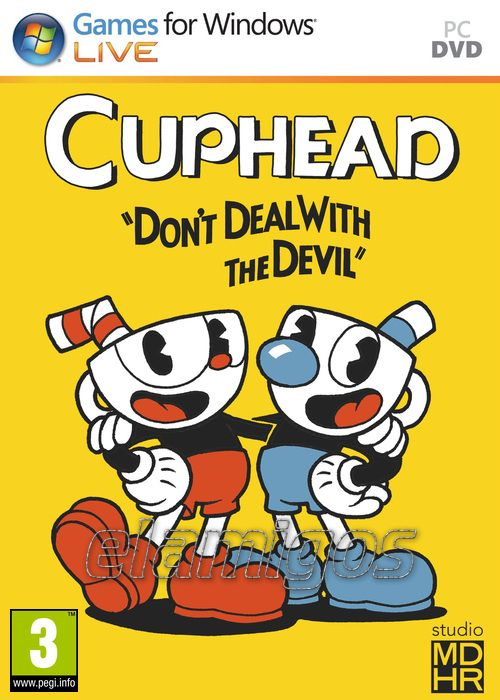

Cuphead 4.61 GB
Género: Plataformas
Cuphead es un juego de acción clásico estilo "dispara y corre" que se centra en
combates contra el jefe. Inspirado en los dibujos animados de los años 30, los
aspectos visual y sonoro están diseñados con esmero empleando las mismas
técnicas de la época, es decir, animación tradicional a mano...